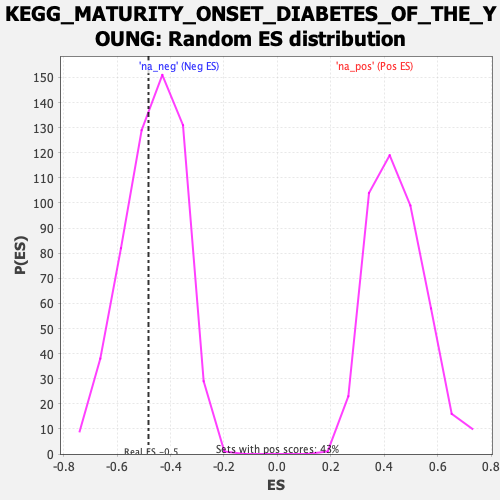

| | | Dataset | prerank |
| Phenotype | NoPhenotypeAvailable |
| Upregulated in class | na_neg |
| GeneSet | KEGG_MATURITY_ONSET_DIABETES_OF_THE_YOUNG |
| Enrichment Score (ES) | -0.48244527 |
| Normalized Enrichment Score (NES) | -1.0398406 |
| Nominal p-value | 0.4122807 |
| FDR q-value | 1.0 |
| FWER p-Value | 1.0 |
Table: GSEA Results Summary
 Fig 1: Enrichment plot: KEGG_MATURITY_ONSET_DIABETES_OF_THE_YOUNG
Fig 1: Enrichment plot: KEGG_MATURITY_ONSET_DIABETES_OF_THE_YOUNG
Profile of the Running ES Score & Positions of GeneSet Members on the Rank Ordered List
| SYMBOL | RANK IN GENE LIST | RANK METRIC SCORE | RUNNING ES | CORE ENRICHMENT | | 1 | FOXA3 | 4018 | 0.625 | -0.0140 | No |
| 2 | NEUROD1 | 5127 | 0.499 | 0.0140 | No |
| 3 | GCK | 5637 | 0.455 | 0.0489 | No |
| 4 | BHLHA15 | 6218 | 0.407 | 0.0777 | No |
| 5 | NR5A2 | 6866 | 0.355 | 0.1003 | No |
| 6 | IAPP | 9142 | 0.231 | 0.0804 | No |
| 7 | PAX4 | 10960 | 0.181 | 0.0642 | No |
| 8 | PAX6 | 13083 | 0.105 | 0.0349 | No |
| 9 | HES1 | 16809 | 0.050 | -0.0297 | No |
| 10 | HHEX | 17117 | 0.045 | -0.0311 | No |
| 11 | NKX6-1 | 17161 | 0.043 | -0.0277 | No |
| 12 | PKLR | 17317 | 0.037 | -0.0270 | No |
| 13 | NEUROG3 | 17439 | 0.031 | -0.0262 | No |
| 14 | FOXA2 | 35979 | -0.027 | -0.3693 | No |
| 15 | MAFA | 36982 | -0.061 | -0.3821 | No |
| 16 | NKX2-2 | 40012 | -0.168 | -0.4221 | Yes |
| 17 | INS | 40473 | -0.189 | -0.4122 | Yes |
| 18 | ONECUT1 | 41313 | -0.217 | -0.4068 | Yes |
| 19 | HNF4G | 42751 | -0.272 | -0.4070 | Yes |
| 20 | MNX1 | 43713 | -0.325 | -0.3933 | Yes |
| 21 | HNF1A | 45291 | -0.406 | -0.3831 | Yes |
| 22 | HNF1B | 50619 | -0.896 | -0.3951 | Yes |
| 23 | PDX1 | 52119 | -1.281 | -0.2982 | Yes |
| 24 | SLC2A2 | 52572 | -1.483 | -0.1620 | Yes |
| 25 | HNF4A | 53103 | -1.869 | 0.0103 | Yes |
Table: GSEA details [plain text format]

Fig 2: KEGG_MATURITY_ONSET_DIABETES_OF_THE_YOUNG: Random ES distribution
Gene set null distribution of ES for KEGG_MATURITY_ONSET_DIABETES_OF_THE_YOUNG